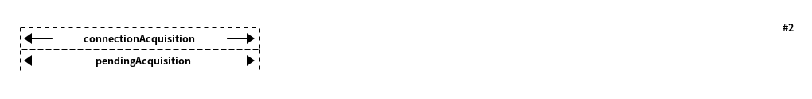

Structured logging¶
Although traditional logging is a useful tool to diagnose the behavior of an application, it has its own problem; the resulting log messages are not always machine-friendly. This section explains the Armeria API for retrieving the information collected during request life cycle in a machine-friendly way.
What properties can be retrieved?¶
RequestLog provides various properties recorded while handling a request:
Request properties¶
Property |
Description |
|---|---|
|
when the request processing started, in microseconds since the epoch (01-Jan-1970 00:00:00 UTC) |
|
the duration took to process the request completely |
|
the byte length of the request content |
|
the cause of request processing failure (if any) |
|
the protocol of the connection (e.g. |
|
the serialization format of the content (e.g. |
|
the name of the virtual host that serves the request |
|
the HTTP headers of the request.
the header contains the method (e.g. |
|
the serialization-dependent content object of the request.
|
|
the preview of the request content |
Response properties¶
Property |
Description |
|---|---|
|
when the response processing started, in microseconds since the epoch (01-Jan-1970 00:00:00 UTC) |
|
the duration took to process the response completely |
|
the byte length of the response content |
|
the cause of response processing failure (if any) |
|
the duration between the request start and the response end (i.e. response time) |
|
the HTTP headers of the response. the header contains the statusCode (e.g. 404), the content type, etc. |
|
the serialization-dependent content object of the response.
|
|
the preview of the response content |
Client connection timing properties¶
Property |
Description |
|---|---|
|
when the client started to acquire a connection, in microseconds since the epoch (01-Jan-1970 00:00:00 UTC) |
|
the duration took to get a connection (i.e. the total duration) |
|
when the client started to resolve a domain name, in microseconds
since the epoch (01-Jan-1970 00:00:00 UTC), |
|
the duration took to resolve a domain name, |
|
when the client started to connect to a remote peer, in
microseconds since the epoch (01-Jan-1970 00:00:00 UTC), |
|
the duration took to connect to a remote peer, |
|
when the client started to wait for the completion of an existing
connection attempt, in microseconds since the
epoch (01-Jan-1970 00:00:00 UTC), |
|
the duration took to wait for the completion of an existing
connection attempt to use one connection in HTTP/2, |
The total duration is the sum of dnsResolutionDurationNanos, socketConnectDurationNanos and
pendingAcquisitionDurationNanos. They may or may not occur depending on circumstances.
These are some of the scenarios how the total duration is composed of:
Resolving a domain name and connecting to the remote peer.

2. Waiting for the connection to be established, since there’s an existing connection attempt, to use one connection in HTTP/2. (Note that, if you create a client with an IP address,
dnsResolutiondid not occur. Also note that, there’s nosocketConnectbecause the client just waits for the connection and uses it.)
3. Connecting to the remote peer with the resolved IP address after the existing connection attempt is failed.
![@startditaa(--no-separation, --no-shadows)
+------------------------------------------------------------------------------------------+ #3
:<-----------------------------------connectionAcquisition-------------------------------->|
+------------------------------------------------------------------------------------------+
:<--------dnsResolution-------->|
+-------------------------------+--------------------------+
:<---pendingAcquisition--->|
+--------------------------+-------------------------------+
:<--------socketConnect-------->|
+-------------------------------+
@endditaa](_images/plantuml-4340899724dbf034ca4898a62a1c320da766f334.png)
Availability of properties¶
Armeria handles requests and responses in a stream-oriented way, which means that some properties are revealed
only after the streams are processed to some point. For example, there’s no way to know the requestLength
until the request processing ends. Also, some properties related to the (de)serialization of request content,
such as serializationFormat and requestContent, will not be available when request processing just
started.
The collected properties must be accessed via RequestLogAccess, which provides a safe access to the
collected properties via the following methods:
isComplete()orwhenComplete()to check if or to get notified when all request and response properties are available.isRequestComplete()orwhenRequestComplete()to check if or to get notified when all request properties are available.isAvailable(RequestLogProperty...)orwhenAvailable(RequestLogProperty...)to check if or to get notified when a certain set of properties are available.
import com.linecorp.armeria.common.HttpRequest;
import com.linecorp.armeria.common.HttpResponse;
import com.linecorp.armeria.common.logging.RequestLog;
import com.linecorp.armeria.common.logging.RequestLogProperty;
import com.linecorp.armeria.server.ServiceRequestContext;
import com.linecorp.armeria.server.AbstractHttpService;
HttpService myService = (ctx, req) -> {
final RequestLogAccess logAccess = ctx.log();
logAccess.whenAvailable(RequestLogProperty.REQUEST_HEADERS)
.thenAccept(log -> {
assert log.isAvailable(RequestLogProperty.REQUEST_HEADERS);
System.err.println("Started to handle a request: " +
log.requestHeaders());
});
logAccess.whenComplete()
.thenAccept(log -> {
assert log.isComplete();
System.err.println("Handled a request: " + log);
});
...
}Availability of client timing properties¶
On the client side, you can also get the timing information about the related connection attempt. Unlike
request and response properties, you need to use ClientConnectionTimings as follows:
import com.linecorp.armeria.client.ClientConnectionTimings;
import com.linecorp.armeria.client.WebClient;
WebClient client = WebClient
.builder("http://armeria.com")
.decorator((delegate, ctx, req) -> {
// Can get as soon as a request is started.
ctx.log().whenAvailable(RequestLogProperty.REQUEST_START_TIME)
.thenAccept(log -> {
final ClientConnectionTimings timings = ClientConnectionTimings.get(log);
if (timings != null) {
System.err.println("Connection acquisition duration: " +
timings.connectionAcquisitionDurationNanos());
}
});
return delegate.execute(ctx, req);
})
.build();Note
The reason why we used the static method is that the ClientConnectionTimings is stored using
the attribute. See RequestContext custom attributes for more information.
Enabling content previews¶
Armeria provides the requestContentPreview and responseContentPreview properties in RequestLog
to retrieve the textual representation of the first N bytes of the request and response content.
However, the properties are disabled by default due to performance overhead and thus they return null
by default. You can enable it using ContentPreviewingClient and ContentPreviewingService
decorators.
import com.linecorp.armeria.server.logging.ContentPreviewingService;
import com.linecorp.armeria.server.ServerBuilder;
ServerBuilder sb = Server.builder();
...
// Enable previewing the content with the maximum length of 100 for textual content.
sb.decorator(ContentPreviewingService.newDecorator(100));
...
sb.build();import com.linecorp.armeria.client.logging.ContentPreviewingClient;
import com.linecorp.armeria.client.WebClientBuilder;
WebClientBuilder cb = WebClient.builder();
...
cb.decorator(ContentPreviewingClient.newDecorator(100));Note that the above decorators enable the previews only for textual content which meets one of the following cases:
when its type matches
text/*orapplication/x-www-form-urlencoded.when its charset has been specified. e.g. application/json; charset=utf-8.
when its subtype is
xmlorjson. e.g. application/xml, application/json.when its subtype ends with
+xmlor+json. e.g. application/atom+xml, application/hal+json
You can also customize the previews by specifying your own ContentPreviewerFactory implementation.
The following example enables the textual preview of first 100 characters for the content type of text/*,
and the hex dump preview of first 100 characters for the content type of application/binary:
import io.netty.buffer.ByteBufUtil;
import com.linecorp.armeria.common.MediaType;
import com.linecorp.armeria.common.logging.ContentPreviewer;
import com.linecorp.armeria.common.logging.ContentPreviewerFactoryBuilder;
ServerBuilder sb = Server.builder();
ContentPreviewerFactoryBuilder builder = ContentPreviewerFactory.builder().maxLength(100);
builder.text(StandardCharsets.UTF_8 /* default charset */, (ctx, headers) -> {
final MediaType contentType = headers.contentType();
// Produces the textual preview when the content type is ANY_TEXT_TYPE.
if (contentType != null && contentType.is(MediaType.ANY_TEXT_TYPE)) {
return true;
}
return false;
});
// Produces the hex dump when the content type is APPLICATION_BINARY.
builder.binary(MediaType.APPLICATION_BINARY);
sb.decorator(ContentPreviewingService.newDecorator(builder.build()));You can write your own producer to change the way to make the preview, e.g.
ContentPreviewerFactoryBuilder builder = ContentPreviewerFactory.builder();
builder.binary(MediaTypeSet.of(MediaType.APPLICATION_BINARY),
(headers, byteBuf) -> {
// You can use the byteBuf to produce your own way.
});
...
ServerBuilder sb = Server.builder();
...
sb.decorator(ContentPreviewingService.newDecorator(builder.build()));Nested log¶
When you retry a failed attempt, you might want to record the result of each attempt and to group them under
a single RequestLog. A RequestLog can contain more than one child RequestLog
to support this sort of use cases.
import com.linecorp.armeria.common.logging.RequestLogBuilder;
RequestLogBuilder.addChild(RequestLog);If the added RequestLog is the first child, the request-side log of the RequestLog will
be propagated to the parent log. You can add as many child logs as you want, but the rest of logs would not
be affected. If you want to fill the response-side log of the parent log, please invoke:
RequestLogBuilder.endResponseWithLastChild();This will propagate the response-side log of the last added child to the parent log. The following diagram
illustrates how a RequestLog with child logs looks like:
![@startditaa(--no-separation, scale=0.85)
/--------------------------------------------------------------\
| |
| RequestLog |
| |
| /-----------------------------\ |
| : | |
| +----------------------+ | Child RequestLogs | |
| | | | e.g. retries | |
| | | | | |
| | Request side log | | +-----------------------+ | |
| | | | | Child #1 | | |
| | | | | +-------------------+ | | |
| | Copied from |<-------+ Request side log | | | |
| | the first child | : | +-------------------+ | | |
| | | | | : Response side log | | | |
| | | | | +-------------------+ | | |
| +----------------------+ | +-----------------------+ | |
| | | ... | | |
| +----------------------+ | +-----------------------+ | |
| | | | . | |
| | | | . | |
| | Response side log | | +-----------------------+ | |
| | | | | Child #N | | |
| | | | | +-------------------+ | | |
| | Copied from | | | : Request side log | | | |
| | the last child | | | +-------------------+ | | |
| | |<-------+ Response side log | | | |
| | | : | +-------------------+ | | |
| +----------------------+ | +-----------------------+ | |
| | | |
| \-----------------------------/ |
| |
\--------------------------------------------------------------/
@endditaa](_images/plantuml-77308ffbcf7f2b77a478813eeab0f78a8a56906d.png)
You can retrieve the child logs using RequestLog.children().
final RequestContext ctx = ...;
ctx.log().whenComplete().thenAccept(log -> {
if (!log.children().isEmpty()) {
System.err.println("A request finished after " + log.children().size() + " attempt(s): " + log);
} else {
System.err.println("A request is done: " + log);
}
});RetryingClient is a good example that leverages this feature.
See RetryingClient with logging for more information.